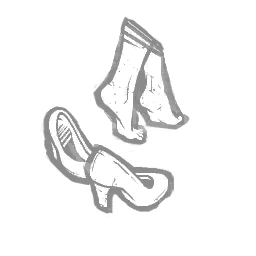
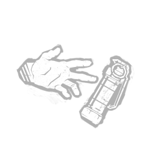
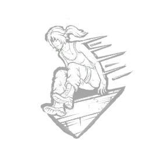
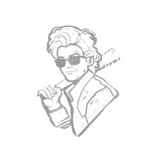
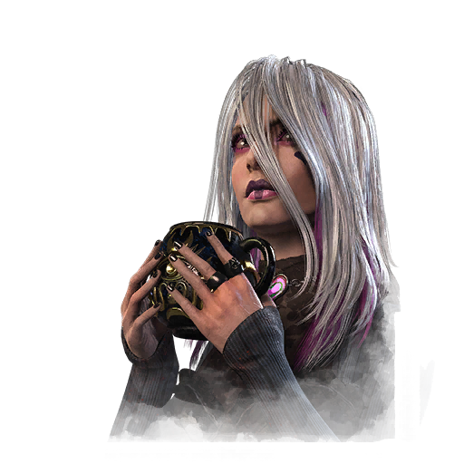
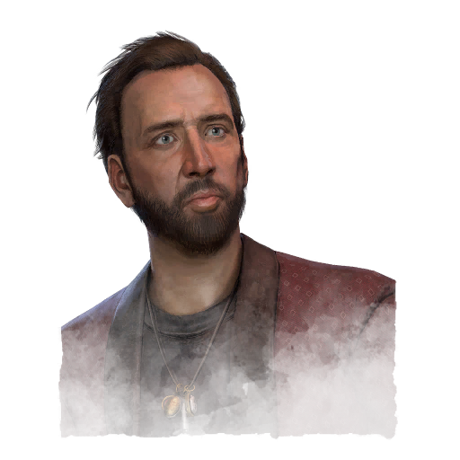

Perfil baixo
Flashbang
Dramaturgia

Finesse
Babá
Sable Ward

"O lugar onde o medo se alastra e o terror se espalha é também onde aqueles que têm o dom podem alcançar o outro lado do véu."
Quando no porão próximo ao círculo, pressione o botão de Habilidade Ativa para iniciar a Invocação , que leva 60 segundos para ser concluída.
Durante uma Invocação , sua Aura é revelado a todos os outros sobreviventes e eles podem participar, acelerando o processo em +100 % , se eles também tiverem um Perk de Invocação equipado, ou em +50 % , se não tiverem.
Uma vez que a Invocação é concluída, os seguintes efeitos são aplicados:
Reduz permanentemente a necessidade de taxas de reparo de todos os geradores no Julgamento por 8/9/10 Acusações.
Você entra automaticamente no Estado Ferido de qualquer estado de saúde anterior e sofrem de Quebrado Efeito de status pelo restante do teste.
Completar esta Invocação desabilita todas as outras instâncias de Invocação: Aranhas Tecelãs pelo restante do Teste.
"Invoco os espíritos da noite para nos ajudarem em nossa fuga desesperada!" — Sable
Ada Wong
Você trabalha melhor sozinho.
Quando está só você e seu perseguidor, você sabe como desaparecer.
Sempre que você for o único Sobrevivente que não está incapacitado por ter sido derrubado, carregado ou enganchado, o Perfil Baixo ativa:
Suprime seus Grunhidos de Dor e a criação de Poças de Sangue e marcas de arranhões por 70 / 80 / 90 segundos.
O Perfil Baixo é desativado após o uso e contabiliza apenas os Sobreviventes que ainda estão participando do Teste.
Leon Scott Kennedy
Você se adaptou a um mundo em caos e está fazendo o que pode a partir dos escombros.
Após o reparo dos geradores para um total de 50 / 45 / 40 % , Flashbang ativa:
Pressione o botão de habilidade ativa enquanto estiver escondido dentro de um armário para criar uma granada de luz.
O Flashbang é desativado após o uso.
"Saia da minha frente!" — Leon Scott Kennedy

Nicolas Cage

Quando as pessoas o convidam para seus projetos, elas o fazem por causa da magia inesperada que você traz à sua performance.
Sempre que você estiver saudável, A Dramaturgia ativa:
Enquanto corre, pressione o botão de Habilidade Ativa para correr com os joelhos altos por 0,5 segundos para ganhar +25 de AceleraçãoIconStatusEffects haste.png Efeito de status por 2 segundos , seguido por um dos seguintes efeitos:
Sofrer com os Efeito de status por 12 segundos.
Prolonga a duração do efeito de status de aceleração em mais 2 segundos.
Grite, mas sem avisar o Assassino.
Receba um item aleatório Itens de ajuda de Rare Rarity, com uma seleção aleatória de Add-ons anexado a ele, eliminando automaticamente qualquer item previamente segurado.
O mesmo efeito não pode acontecer duas vezes seguidas.
A Dramaturgia Causa o ExaustoIconStatusEffects exausto.png Efeito de status por 60/50/40 segundos . Dramaturgia não pode ser usada quando Exausto.
"Aceite o papel. É um bom filme"ele diz. "Qual a pior coisa que pode acontecer?" — Nicolas Cage
Lara Croft
A ameaça de perigo pode motivar qualquer criatura a fortalecer sua determinação.
Sempre que você estiver saudável, o Finesse ativa:
Aumenta sua velocidade de salto para um salto rápido em +20%.
Finesse tem um tempo de espera de 40 / 35 / 30 segundos após executar um Fast Vault.
"Só preciso me esforçar um pouco mais." — Lara Croft
Steve Harrington
"Embora você tenha a reputação de ser egocêntrico, você arrisca tudo para ajudar os necessitados."
Sempre que você desprender um Sobrevivente, você se beneficia do seguinte efeito:
A Aura do Assassino é revelado a você por 8 segundos.
O Sobrevivente desenganchado se beneficia dos seguintes efeitos por 20/25/30 segundos:
Suprime a criação de suas marcas de arranhões e poças de sangue.
Aumenta a força de sua AceleraçãoIconStatusEffects haste.png Efeito de status em +10%.
"Prometi manter vocês, seus idiotas, seguros, e é exatamente isso que pretendo fazer." — Steve Harrington